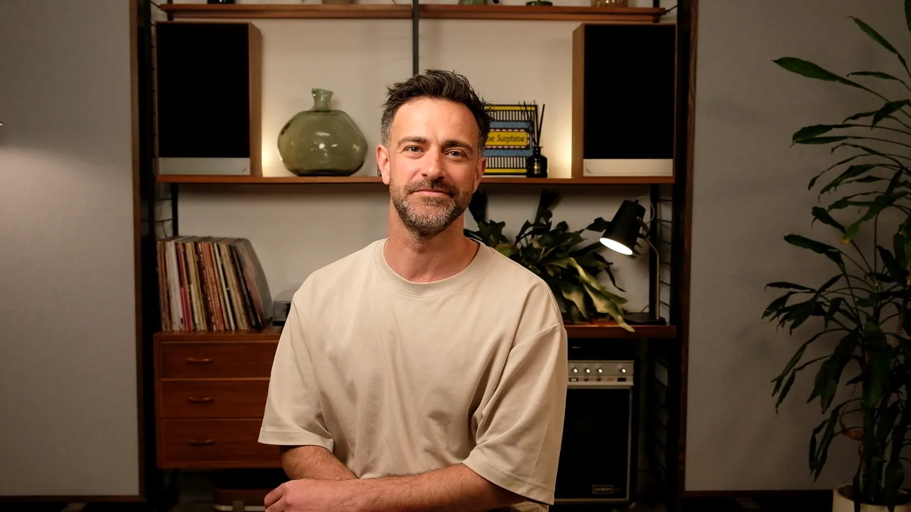
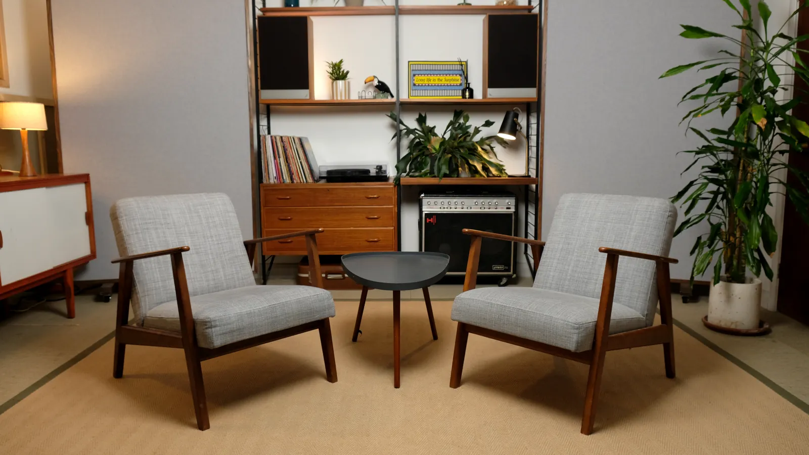

Corporate video your leaders will feel comfortable making.
We film talking heads, interviews, internal comms and branded content in a private studio near St Albans. You can book us fully crewed or bring your own team.
One studio for most of your content calendar
Talking heads
CEO updates, explainers, training modules and recruitment films, recorded with teleprompter-friendly framing and clean, consistent lighting.
Interviews
Two-camera interviews for case studies, testimonials, thought leadership and documentaries.
Branded content
Product stories, social series and campaign assets, with sets styled to suit your brand.
Content days
Shoot a month of video in one day: long-form pieces, short clips and portrait photos, all in one booking.

A calm room gets better performances.
Most people find being on camera uncomfortable. Our studio is quiet and private, with natural light, so it feels more like a lounge than a sound stage. Your speakers relax, and the footage looks it.
- Private use of the studio, with no other clients sharing it
- Clear audio from a team with a music recording background
- Flexible sets that can be dressed with your branding
- Agency-friendly: dry hire for your crew, or a full service from us
- Away from the city, about 25 minutes by train from London
Choose how much we handle
Studio only
For agencies and in-house crews
half day dry hire
- Exclusive use of the studio
- Sets, furniture and practical lights
- Power, Wi-Fi and kitchen
Crewed shoot
Studio, kit and engineer
half day · multi-camera
- Cameras, lighting and sound
- Engineer and operator
- Raw files on the day
Full production
From brief to finished film
per shoot day, including edit
- Pre-production planning
- Filming and editing
- Captions and social cut-downs
Corporate filming questions
Can you work to our brand guidelines?
Do you invoice companies and accept purchase orders?
Can our agency or in-house team use their own kit?
Is the studio suitable for confidential recordings?
Need content for your next campaign?
Share the brief and deadline. We'll come back with an approach and a fixed quote.